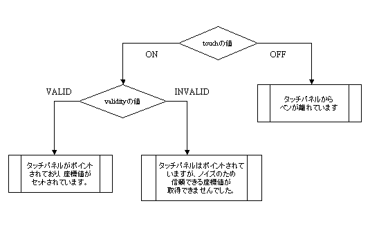

#include <nitro/spi.h>typedef struct {
u16 x;
u16 y;
u16 touch;
u16 validity;
} TPData;| x | x座標 |
| y | y座標 |
| touch | 接触判定フラグ |
| validity | 座標値の有効性フラグ。INVALIDの場合でもtouchの値は有効です。 |
タッチパネルの座標を表す構造体です。
この構造体は、生のタッチパネル値にも画面座標値にも使用されます。
touchは以下の値をとり、タッチパネルに触れられているかどうかを示します。
TP_TOUCH_OFF 0 // タッチパネルに触れていない TP_TOUCH_ON 1 // タッチパネルに触れている
validityは以下の値をとり、チャタリング対策処理の結果得られた値の有効性を示します。
このフラグがINVALIDとなっている場合でもtouchの値は有効ですのでON/OFF判定は行なってください。
TP_VALIDITY_VALID 0 // 有効なデータ TP_VALIDITY_INVALID_X 1 // X座標が無効なデータ TP_VALIDITY_INVALID_Y 2 // Y座標が無効なデータ TP_VALIDITY_INVALID_XY (TP_VALIDITY_INVALID_X | TP_VALIDITY_INVALID_Y) // XY座標共に無効なデータ
アプリケーション作成の際にはINVALID値が格納される場合を考慮する必要があります。
INVALIDな値を取得した場合でも異常な動作を行なわないように、
最後にVALID値として取得された座標データを使用するなどの対策をとられることを推奨します。

Ver. 2004/04/16 初版